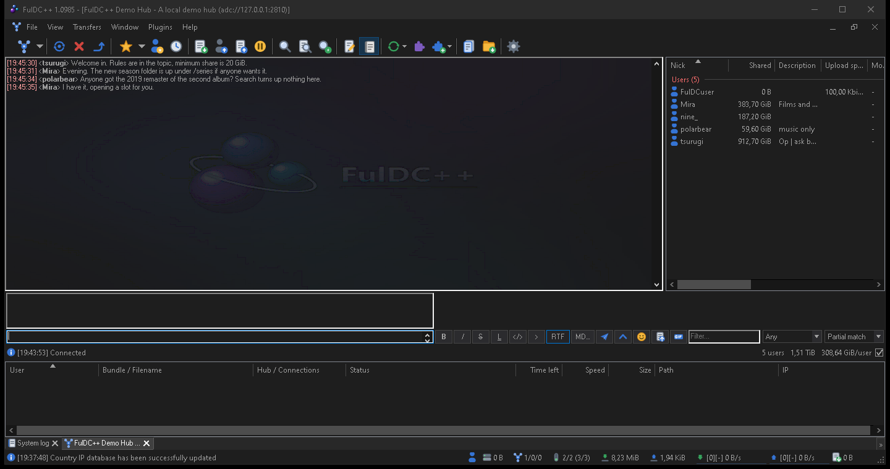

Hubs & chat
Finding hubs, keeping the good ones, and everything that happens in a hub window.
Finding hubs
Public hubs
View → Public hubs shows the hubs published on public hub lists: name, description, address, users, share size and minimum share. Start typing in the filter box (Ctrl+F) to narrow it down. Double-click connects; right-click adds to favourites or copies the address.
You can configure several hub lists and switch between them from the drop-down. FulDC++ only: two extra entries sit in that list — Merge all (Alt+M) combines every configured list into one view with duplicates removed, and Discovered from users collects hub recommendations from the users you are already connected to, which is how you find the hubs that never publish themselves.
Recent hubs
View → Recent hubs is a history of hubs, private chats and file lists you have opened, so you can get back to something you did not think to bookmark.
Favorite hubs
View → Favorite hubs is your own curated list, and it is where the per-hub settings live. Right-click a favourite and choose Properties to set:
Identity
A nick, password, e-mail and description used only on this hub. Handy when one community knows you by a different name, or when a hub needs a registered account.
Share profile
Which of your share profiles this hub sees. This is how you share one set of folders with one community and a different set with another.
Connect automatically
Join this hub when FulDC++ starts. File → Connect to favorite hubs triggers the same thing on demand.
Appearance
Which side the user list sits on, and a chat background image for this hub only.
Favourites can be sorted into groups, which the Window menu then uses for bulk actions like “close all hubs not in this group”.
The hub window
A hub tab is chat on one side and the user list on the other, with the hub's topic across the top. The input box is at the bottom.

The user list
Every user on the hub, with their share size, connection, tag and country. Sort by any column, and use the filter box to find someone by name. Double-click a user to browse their file list. Right-click for the full menu: send a private message, get the file list, match your queue against their share, grant an extra upload slot, add to favourites, ignore, or copy details.
Operators and bots are marked with their own icons, and the list can be
grouped by type so ops and bots sit at the top — toggle that with
/groupusers.
Chatting
Type and press Enter. Nicks autocomplete with Tab. Links, magnet links and hub addresses in chat are clickable; a magnet link adds the file to your queue, and a hub address opens that hub. Typing / pops up a list of commands filtered as you type.
You can find text in the chat history (Ctrl+F), clear the display with
/clear, and open the hub's chat log with /log. Join and leave messages are
noisy on big hubs — /showjoins turns them off for the current hub.
FulDC++ adds a formatting bar above the input box, emoticon packs, GIF search and rich text messages; those are covered in FulDC++ extras.
Private messages
Double-click a user, or right-click → Send private message, to open a PM
tab. On ADC hubs a PM can travel two ways: through the hub, or over a
direct encrypted connection between the two clients (CCPM), which keeps the hub
operators out of the conversation. FulDC++ sets this up on its own when both sides support it;
/direct forces it and /encrypted reports what you are actually using.
Chat commands
Commands start with /. Type /help in any chat for the list that applies
to that window; an autocomplete popup appears as soon as you type the slash.
Anywhere
| Command | Does |
|---|---|
| /me <message> | Send an action message. |
| /clear | Clear the chat display. |
| /away [message] | Toggle away mode, optionally with a message. |
| /search <text> | Open a search window for that text. |
| /slots <n> | Set your number of upload slots. |
| /extraslots <n> | Set extra slots. |
| /refresh | Refresh your share. |
| /ratio | Post your share ratio to the chat. |
| /stats | Post system and client statistics to the chat. |
| /speed | Show current transfer speeds. |
| /info | Show system information. |
| /df | Show disk space. |
| /uptime | Post your uptime. |
| /connection | Show your connection settings, IP and ports. |
| /whois <ip> | Look up an IP address. |
| /log [system|downloads|uploads] | Open a log file. |
| /gif [search] | Find a GIF to send. FulDC++ only. |
| /editor, /md | Open the markdown editor. FulDC++ only. |
| /optimizedb, /verifydb | Clean up or verify the hash database. |
| /shutdown | Toggle shutting the computer down when transfers finish. |
In a hub window
| Command | Does |
|---|---|
| /join <hub> | Connect to another hub. |
| /favorite, /removefavorite | Add or remove this hub from favourites. |
| /password <password> | Send the hub password when asked for one. |
| /nick <nick> | Change your nick on this hub (NMDC hubs that support it). |
| /getlist <nick> | Download a user's file list. |
| /pm <nick> | Open a private message. |
| /mcto <nick> <msg> | Send a private message that appears in the user's main chat. |
| /topic, /ctopic | Show the hub topic, or open the link in it. |
| /userlist | Show or hide the user list. |
| /showjoins, /favshowjoins | Toggle join and leave messages. |
| /groupusers | Group the user list by type (op, bot, user). |
| /allow | Accept an untrusted TLS certificate after a keyprint mismatch. |
| /close | Close the hub tab. |
In a private message
| Command | Does |
|---|---|
| /grant | Give this user an extra upload slot for ten minutes. |
| /getlist | Download their file list. |
| /favorite | Add them to favourites. |
| /direct | Force a direct encrypted connection. |
| /encrypted | Report the encryption state of this chat. |
| /disconnect | Drop the direct connection. |
| /close | Close the tab. |
Media player commands (/wmp, /itunes, /mpc,
/fb, /w, /s) post what you are currently playing. Hubs may
add their own commands on top of these — those come from the hub, not the client, and are
usually listed in the hub's own help.